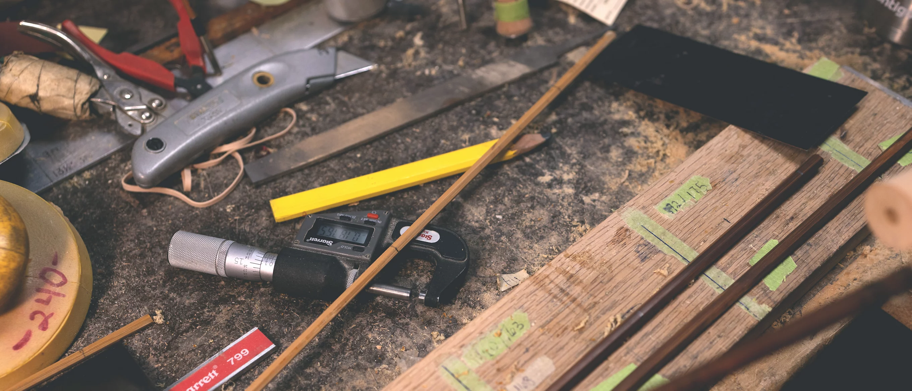
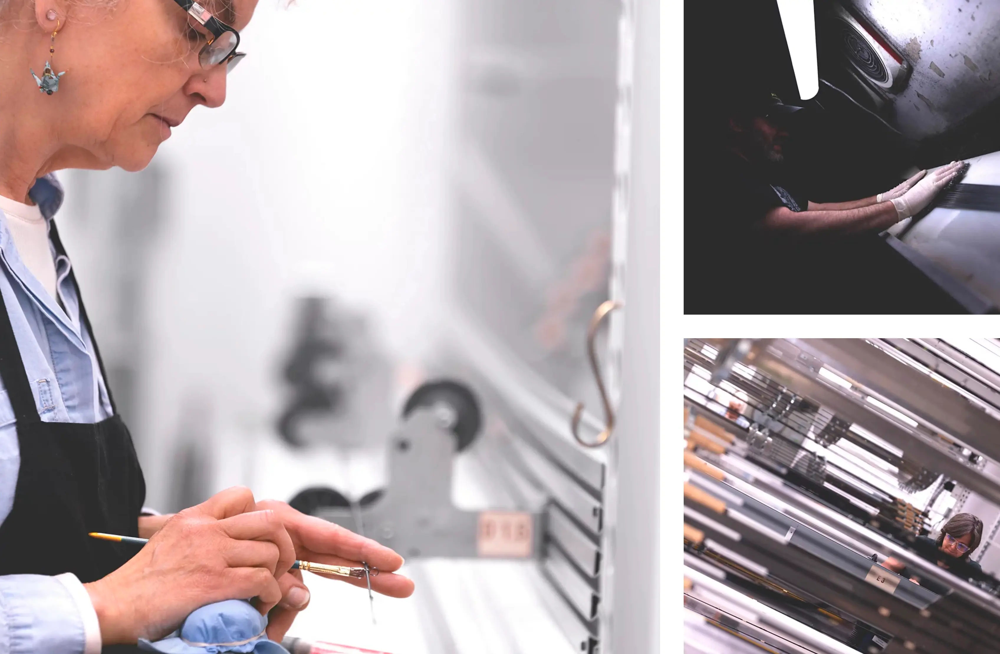

Las cañas de ORVIS fabricadas en Estados Unidos combinan ingeniería, materiales avanzados y un proceso de construcción controlado en cada etapa. No se trata solo de fabricar una caña, sino de optimizar su comportamiento en pesca real.
Fabricación en Vermont
Las cañas Orvis se producen en Vermont, donde cada modelo atraviesa controles estrictos de calidad.
A diferencia de la producción masiva, cada caña es tratada como un componente técnico de precisión.

Diseño e ingeniería

Cada caña se diseña considerando recuperación, transferencia de energía y estabilidad del loop.

Materiales avanzados
Grafito de alta calidad y laminado preciso permiten lograr cañas más livianas, resistentes y sensibles.
✔ Mayor distancia
✔ Mejor control
✔ Menor fatiga
✔ Mayor sensibilidad
Proceso de fabricación

Corte, laminado, curado, alineación, armado y testeo final aseguran consistencia en cada caña.
Performance en pesca real

Las cañas Orvis se prueban en condiciones reales: viento, moscas grandes y pesca exigente.
Comprar Orvis en Argentina
Elegí tu equipo con asesoramiento especializado según tu tipo de pesca.
Consultar asesoramiento